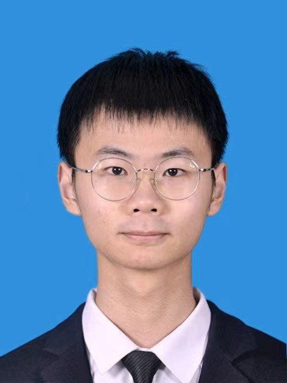

Jia-Rui Zhang
This is Jia-Rui Zhang, a PhD student at the College of Engineering, Peking University, majoring in solid mechanics. He is currently conducting research on Dislocation Dynamics under the guidance of Professor Yin Zhang.
He graduated from China Agricultural University in June 2024, with a Bachelor of Engineering in Engineering Mechanics and a Bachelor of Science in Mathematics and Applied Mathematics. During his undergraduate studies, he conducted research on nonlinear PT-symmetric systems and solitons under the guidance of Professor Yu-Jia Shen.